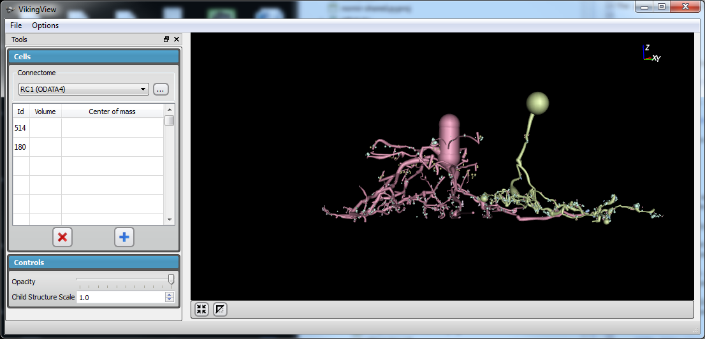

Viking View¶
Viking View is an open source program written by Alan Morris that renders cell morphology downloaded from Viking’s OData service.
VikingView downloads are available for PC and Mac.
Source code is availabe at the Scientific Computing Institute’s Git repository.